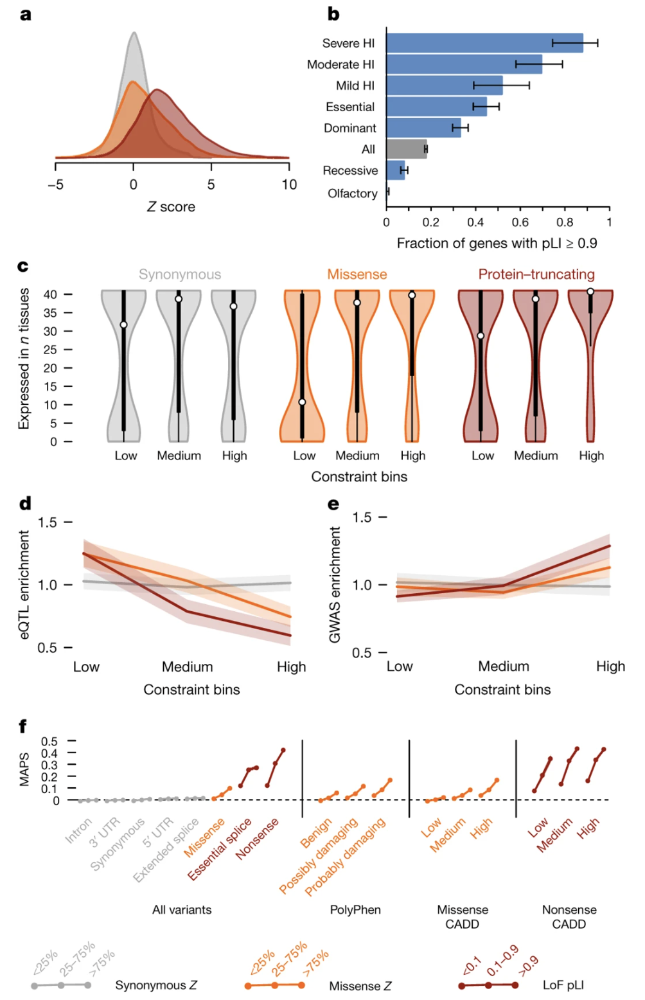
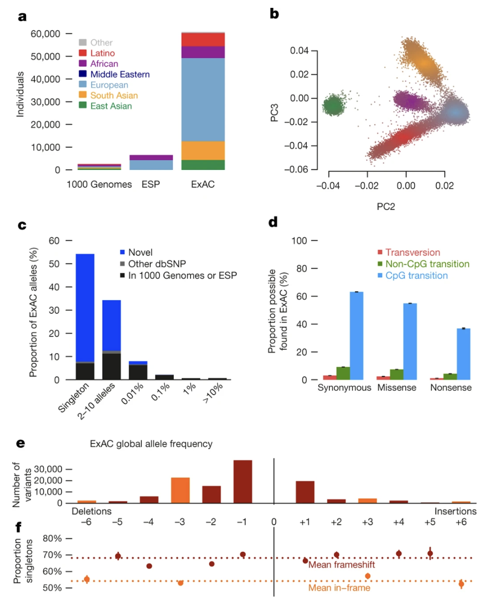
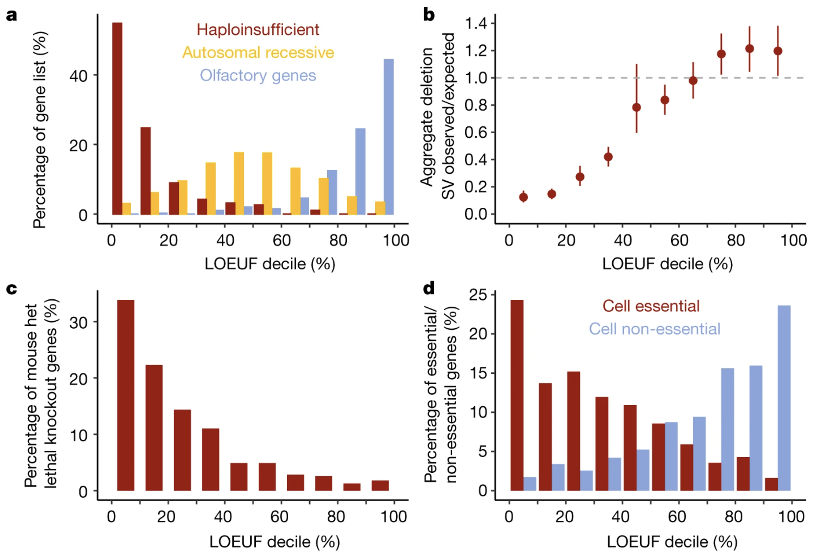
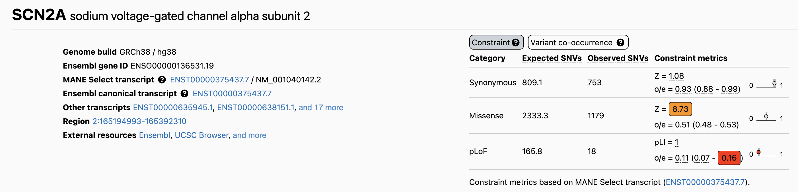

BSMS205 · Genetics
Haplo-
Chapter 11 · Part II · Variation
Welcome to Chapter eleven of BSMS two oh five Genetics. Last time we asked what makes a variant dominant. Today we zoom into one of the most common mechanisms of dominance — haploinsufficiency. The idea is simple: some genes need both copies turned on to work, and breaking just one copy is enough to cause disease. We will define the term, explain why it happens, and most importantly, we will learn how to measure it using two real tools that you yourselves will use — pLI and LOEUF. Let's begin.
A question to start with
When is halfenough ?
Here is the question that frames today's lecture. You have two copies of every gene — one from Mom, one from Dad. For most genes, one working copy is plenty. The cell makes enough protein, life goes on. But for some genes, one copy is not enough. Half the dose breaks the system. Today we will figure out which genes those are, why they are special, and how we can spot them by looking at population data.
Two copies · why we usually have a buffer
Diploid: one allele from Mom , one from Dad
For most genes, one copy covers normal demand
The other copy = biological backup
But not always — some genes are tight on dose
Step back to the basics. Humans are diploid. You have two alleles of every autosomal gene, one from each parent. For the vast majority of genes, this gives you a built-in safety margin — if one copy gets damaged, the other one keeps the cell running. That redundancy is what makes most loss-of-function mutations recessive. But not every gene works on a comfortable budget. Some genes operate so close to the edge that losing one copy already drops protein levels into a danger zone. Those are the genes we study today.
The cake analogy
A recipe needs two cups of sugar .one , you get something cake-like .
Haploinsufficient genes follow the two-cup recipe .
I like this analogy from the textbook. Imagine baking a cake that calls for two cups of sugar. With one cup, you still get something cake-shaped, but the texture is off and the flavor is wrong. The recipe is not forgiving. Haploinsufficient genes work like that recipe — they require both alleles producing protein at full capacity. Cut the sugar in half and the cell does not get a half-functional gene product. It gets disease.
From Chapter 10 → here
Last time
Dominant alleles · one bad copy is enoughMany mechanisms
Today
One mechanism in detail: Haploinsufficiency — dose-sensitive genes
Quick bridge from last time. In Chapter ten we introduced dominant alleles — variants where one bad copy is enough to cause disease. We saw that dominance can come from several different mechanisms — gain-of-function, dominant-negative, and haploinsufficiency. Today we zoom in on that last one. Haploinsufficiency is one of the most common reasons that loss-of-function variants behave dominantly, and it is the easiest to measure quantitatively. So let's learn how.
Roadmap for today
Definitions · haploinsufficient vs haplosufficient
Why selection rare-ifies bad PTVs
Measuring intolerance · pLI
The next-gen score · LOEUF
Case study · SCN2A
Why this matters in the clinic
Summary & what comes next
Here is the route. First, we nail down the definitions — what is haploinsufficient, what is haplosufficient, and what does loss-of-function tolerant mean. Second, we connect this to natural selection — why these variants are rare in healthy populations. Third, we learn pLI, the first big tool from the ExAC study in twenty sixteen. Fourth, LOEUF, the refined tool from the gnomAD study in twenty twenty. Fifth, we look at one real haploinsufficient gene — S C N two A — as a case study. Sixth, we discuss how this knowledge changes clinical practice and even drug development. And then we wrap up. Let's go.
§ 1
Defining
Let's start with three precise definitions. Haploinsufficient. Haplosufficient. Loss-of-function tolerant. These three words sound similar but mean different things, and you need them sharp before we move to the data.
Haploinsufficient · one copy is not enough
One allele knocked out (often a PTV )
Remaining copy cannot keep up
Result: disease or abnormal trait
These genes are dose-sensitive
Cut the protein in half → the cell can't compensate.
Definition number one. Haploinsufficiency happens when one copy of a gene gets knocked out — usually by what we call a P T V, a protein-truncating variant — and the remaining copy cannot produce enough protein to keep things normal. The cell does not have a way to ramp up the surviving allele. The result is disease, often a developmental disorder. The key property of these genes is dose-sensitivity. They run on a tight production budget, and you cannot cut that budget in half without breaking something.
Haplosufficient · one copy is fine
One working copy → enough protein
The cell tolerates the missing allele
Most genes behave this way
This is the default state for diploids
Definition number two. Haplosufficient genes are the comfortable case. One working copy makes plenty of protein for normal function. The cell does not even notice that the other allele is broken. Most of our twenty thousand genes fall into this category. That is why most loss-of-function mutations in our genome do not cause disease in heterozygotes — they hit haplosufficient genes where the spare copy covers the loss.
LoF-tolerant · even both copies can go
Some genes are even more forgiving
You can lose one or both copies without harm
Often have backup paralogs elsewhere
Or simply not critical for fitness
Definition number three — and this one surprises students. There are genes where you can lose not just one copy but both, and still walk around perfectly healthy. We call these loss-of-function tolerant, or LoF-tolerant for short. The classic example is the olfactory receptor family — humans have hundreds of genes for detecting smells. Knock one out, and you have lost the ability to detect, say, a single specific molecule. You will never notice. Either there is a backup paralog elsewhere in the genome, or the gene's function simply was not under strong selection.
The dose-sensitivity spectrum
Class One copy lost Two copies lost Examples
Haploinsufficient Disease Often lethal Transcription factors, channels Haplosufficient No phenotype Recessive disease Most disease genes LoF-tolerant No phenotype Often no phenotype Olfactory receptors
Here is the full spectrum in one table. On one end, haploinsufficient genes — losing one copy already causes disease, losing both is often lethal. In the middle, haplosufficient genes — heterozygotes are fine, but if you lose both copies you get a recessive disease. On the other end, LoF-tolerant genes — losing one or even both copies often produces no phenotype. The key insight today is that this spectrum is not random. It reflects how much selective pressure each gene is under. And we can read that pressure off of population data.
A surprising number
~100
PTVs · in every healthy person
Healthy adults each carry about 100 PTVs
Most sit in LoF-tolerant genes
A PTV by itself is not a death sentence
What matters is which gene got hit
Here is a number that will surprise you. The average healthy adult carries about one hundred protein-truncating variants — full-on stop codons or frameshifts that destroy gene function. That came from a Mac Arthur et al. twenty twelve study analyzing one hundred eighty-five genomes. So having a PTV is not unusual. Having a PTV is not the same as having a disease. The reason most people walk around fine despite carrying these variants is that they almost all sit in genes that can absorb the loss. The dangerous PTVs — the ones in haploinsufficient genes — are extremely rare in healthy people. And in a moment we will see exactly why.
§ 2
Selection
Why are PTVs in haploinsufficient genes so rare? The answer is evolution. Specifically, a force called purifying selection. Let's spend a few minutes on this, because it is the conceptual engine behind every constraint score we will use today.
Natural selection · in one sentence
Variants that reduce fitness filtered out across generations.
Fitness = ability to survive and reproduceHelpful variants spread ; harmful ones vanish
Slow-motion quality control on the genome
Natural selection in one sentence: variants that reduce fitness get filtered out across generations. Fitness here means the ability to survive and reproduce. If a mutation gives you better disease resistance, you are more likely to have kids who carry it, and the variant spreads. If a mutation kills you before you reproduce — say, a PTV in a gene critical for brain development — that variant dies with you. Over thousands of generations, this acts as a slow-motion quality-control system on the genome.
Purifying selection · the cleanup crew
Type of natural selection that removes harmful variants
Most active on essential genes
PTVs in haploinsufficient genes → strongly disfavored
PTVs in LoF-tolerant genes → no pressure to remove
Inside natural selection sits a specific subtype called purifying selection — the cleanup crew. Its job is to remove harmful mutations from the population. PTVs in haploinsufficient genes are harmful, because they cause developmental disorders, neurological disease, or cancer. So purifying selection removes them quickly — those variants do not stick around in the population. PTVs in LoF-tolerant genes face no such pressure. They accumulate freely. That difference is exactly the signal we are about to learn how to read.
The signal we exploit
If a gene has far fewer PTVs removing them .
Few PTVs in healthy people = essential gene
Many PTVs = tolerant gene
This is the basis of every constraint metric
And here is the key insight that turns selection into a measurement tool. If we look at a large population of healthy people and we see that a gene has far fewer PTVs than we would expect by random chance, that is evidence that purifying selection has been actively removing those PTVs. The gene must be essential. Conversely, if a gene has roughly the expected number of PTVs, selection is not pushing back, and the gene is probably tolerant. This compare-observed-to-expected logic is the foundation of every constraint score in genomics today.
§ 3
Measuring with
Now to the first big tool. In twenty sixteen, the ExAC consortium analyzed sixty thousand seven hundred six adult exomes and developed a score called pLI — the probability of being loss-of-function intolerant. This is one of the most cited metrics in human genetics, and you will see it on almost every gene browser you open this semester. Let's understand it.
The ExAC study · 2016
60,706 adult exomes · the largest at the timeAdults without severe developmental disorders
Healthy population = baseline
Lek et al. 2016, Nature
The study itself. Sixty thousand seven hundred six adult exomes — the protein-coding parts of the genome where most disease mutations hide. Crucially, these were adults without severe developmental disorders, meaning the dataset represents a healthy baseline. That choice matters: if you sequenced sick patients, you would find lots of disease-causing PTVs. By focusing on healthy adults, the study captures what selection has already filtered out. Lek et al, twenty sixteen, Nature. One of the most influential papers in modern human genetics.
What pLI means
pLI = probability that a gene is loss-of-function intolerant
Score from 0 to 1
pLI ≥ 0.9 → highly intolerant · likely haploinsufficient pLI ≈ 0 → tolerates PTVs · LoF-tolerantA binary-style readout: intolerant or not
Here is what pLI actually means. It is the probability that a gene is loss-of-function intolerant — a number between zero and one. By convention, a pLI of zero point nine or higher flags a gene as highly intolerant, almost certainly haploinsufficient. A pLI near zero means the gene tolerates PTVs just fine. In practice, most people use pLI as a yes-no test: is this gene intolerant or not? That binary nature is its strength and, as we will see in a moment, also its weakness.
How pLI is calculated
compare observed PTVs ↔ expected PTVs
Expected : from gene length × background mutation rateObserved : actual PTVs found in 60,706 exomesBig shortfall → strong selection against PTVs
Big shortfall → high pLI
How is pLI calculated? The recipe is simple in concept. First, you predict how many PTVs you would expect to see in a gene, given how long it is and the background mutation rate. Bigger genes naturally accumulate more mutations, so you adjust for that. Second, you count how many PTVs are actually observed in the sixty thousand seven hundred six exomes. Third, you compare. If observed is much lower than expected — say, zero observed when fifty were expected — selection must have been actively removing PTVs because they reduced fitness. That is a high pLI gene. Bigger shortfall, higher pLI.
3,230 highly intolerant genes
3,230
genes with pLI ≥ 0.9
~16% of all human genes
Enriched in ribosome assembly
Enriched in chromatin regulation
Enriched in cell cycle control
The headline number from ExAC. Three thousand two hundred thirty genes had pLI greater than or equal to zero point nine — about sixteen percent of all human genes. And these are not random. They cluster in specific functional categories: ribosome assembly, chromatin regulation, the cell cycle, transcription factors. In other words, the cellular machinery you absolutely cannot mess with. That biological coherence is one reason we trust the metric — it picks out exactly the categories you would predict from first principles.
pLI flags known disease genes

Figure 1. Known haploinsufficient (dominant) disease genes pile up at high pLI; recessive disease genes spread more broadly. pLI captures real biology. Source: Lek et al. 2016, Nature . CC-BY 4.0.
Here is the validation figure from the ExAC paper. They took genes already known to cause dominant, haploinsufficient disorders, and asked: where do these genes fall on the pLI distribution? The answer — overwhelmingly piled up at the high end. Recessive disease genes, in contrast, are spread more broadly, because losing one copy of a recessive gene does not reduce fitness. This is the key validation: pLI is not just a number. It picks out the genes we already know are dose-sensitive. Which means it can also predict new ones.
Why use healthy adults?
Haploinsufficient genes → developmental disorders
Healthy adults already survived and may have reproduced
Selection has already worked on this sample
The signal you see = what survived selection
Why study healthy adults? Why not patients? Because haploinsufficient genes typically cause severe developmental disorders, and people with those disorders either did not survive to adulthood or did not reproduce. By sequencing healthy adults, ExAC was looking at a population that purifying selection had already pruned. The signal you see in the data is exactly the signal of what survived selection. It is a beautifully indirect way to identify essential genes: you do not look for the disease; you look for the absence of variants where disease should have appeared.
PTVs are mostly singletons

Figure 2. Most PTVs in ExAC appear in only one person — the signature of purifying selection keeping harmful variants rare. Source: Lek et al. 2016, Nature . CC-BY 4.0.
And here is one more figure from the same paper that drives the point home. This shows the allele frequency distribution of PTVs in ExAC. The vast majority appear only once — they are singletons, found in just one of the sixty thousand people. That extreme rarity is the signature of purifying selection actively keeping these harmful variants from spreading through the population. PTVs in haploinsufficient genes are overwhelmingly singletons. PTVs in LoF-tolerant genes are spread more across the frequency spectrum, because there is no selective pressure pushing them down.
§ 4
The Refined Score:
pLI was a huge advance, but four years later the field upgraded it. In twenty twenty, the gnomAD consortium published a refined metric called LOEUF that fixed several limitations of pLI. Today, most modern analyses prefer LOEUF. Let's understand why.
The gnomAD study · 2020
141,456 individuals · more than 2× ExACBoth exomes and whole genomes
Adults without severe developmental disorders
Karczewski et al. 2020, Nature
The gnomAD study. Karczewski et al, twenty twenty, Nature. They more than doubled the sample size — one hundred forty-one thousand four hundred fifty-six individuals — and combined both exome and whole-genome sequences for broader coverage. Same selection criterion as ExAC: adults without severe developmental disorders. Same goal: identify which genes are intolerant to loss of function. But with more data and better filtering tools, gnomAD could produce a more refined score.
What LOEUF means
LOEUF = L oss-of-function O bserved/E xpected U pper-bound F raction
Continuous score (no hard threshold)Lower = more intolerantLOEUF < 0.35 ≈ likely haploinsufficientAdjusted for statistical uncertainty
LOEUF stands for Loss-of-function Observed over Expected Upper-bound Fraction. The name is a mouthful, but the idea is simpler than pLI. It is just observed PTVs divided by expected PTVs, with a confidence interval applied. The "upper-bound fraction" part means we take the upper end of the confidence interval — a conservative estimate. Lower LOEUF means more intolerant. Below about zero point three five is the rough cutoff for likely haploinsufficient genes. And critically, unlike pLI, this is a continuous score — no hard yes-or-no threshold.
pLI vs LOEUF · what changed
pLI
Yes / no testCutoff at 0.9
Misses moderate intolerance
LOEUF
Sliding scale Lower = more intolerant
Captures shades of gray
Side-by-side comparison. pLI is essentially a yes-no test — you either clear the zero-point-nine bar or you do not. That works well for clearly intolerant genes but misses genes with moderate intolerance, the ones that fall in a gray zone. LOEUF is a sliding scale — a dimmer switch instead of a light switch. It tells you not just whether a gene is intolerant but how intolerant it is. That granularity matters for variant prioritization in clinical diagnosis, and for ranking drug targets, because biology rarely has hard thresholds.
The LOFTEE upgrade
LOFTEE = LoF Transcript Effect EstimatorFilters out fake PTVs · sequencing errors, alt transcripts
Output: 443,769 high-confidence PTVs
Cleaner input → more reliable score
One more important upgrade gnomAD added — a tool called LOFTEE, which stands for Loss-of-Function Transcript Effect Estimator. LOFTEE filters out variants that look like PTVs on paper but are not really. Things like sequencing errors, or stop codons that fall in alternative transcripts where they do not actually truncate the main protein. After LOFTEE filtering, the gnomAD team had four hundred forty-three thousand seven hundred sixty-nine high-confidence PTVs across the dataset. Cleaner input, more reliable observed counts, more accurate LOEUF.
LOEUF lines up with biology

Figure 3. Genes with low LOEUF are essential in mouse knockouts and enriched for human disease. External validation that LOEUF captures real biological importance. Source: Karczewski et al. 2020, Nature . CC-BY 4.0.
Here is the validation figure from the gnomAD paper. They show LOEUF score on the x-axis and several measures of gene importance on the y-axis: whether knocking out the gene is lethal in mouse models, whether it is associated with developmental abnormalities, and whether it appears in human disease catalogs. The pattern is striking — low LOEUF genes are overwhelmingly essential, while high LOEUF genes can often be knocked out without major consequences. This external validation tells us LOEUF is not just a statistic. It tracks with biology you can verify in mice and clinic.
§ 5
Case Study:
Now let's make this concrete with one gene. SCN two A is a sodium channel critical for brain development. PTVs in this gene cause severe neurodevelopmental disorders and epilepsy. It is also a textbook example of a haploinsufficient gene, and we have followed it from Chapter ten. Let's see what its constraint scores look like.
SCN2A · the dosage profile
o/e = 0.11 · pLI = 1.0 · LOEUF very low
Here are the numbers for SCN two A from gnomAD. Expected number of PTVs in a population this large — about one hundred sixty-five point eight. Observed number — only eighteen. The observed-over-expected ratio is zero point one one, meaning we see only eleven percent of the PTVs we would expect by chance. That extreme depletion gives SCN two A a pLI of one point zero — the maximum score — and one of the lowest LOEUF values in the genome. This is purifying selection at full power, because PTVs in this gene cause severe disease and patients rarely reproduce.
SCN2A on gnomAD · the actual page

Figure 4. The gnomAD constraint table for SCN2A. pLoF row: expected 165.8, observed 18, o/e = 0.11, pLI = 1.0. Missense Z-score = 8.73 also shows depletion. Source: gnomAD Browser, ENSG00000136531.
Here is the actual gnomAD page for SCN two A. This is what you will see when you look up any gene on gnomAD dot broadinstitute dot org. The table shows expected versus observed counts across categories. The top row, p Lo F — protein-truncating variants — gives you the numbers we just discussed. Below that, missense variants are also depleted with a Z-score of eight point seven three, meaning even single amino acid changes are under selection. Bookmark this page. You will be using it for projects this semester.
The clinical reality of SCN2A
~1,500–2,000 known affected individuals worldwide
Severe epilepsy and neurodevelopmental disorders
De novo PTVs (not inherited) → fitness essentially zero
That is why the constraint signal is so strong
On the clinical side. About fifteen hundred to two thousand affected individuals are currently catalogued worldwide. Most have severe epilepsy or neurodevelopmental disorders. Almost all carry de novo mutations — variants that arose in the parental germline, not inherited from a parent. Because patients rarely reproduce, fitness from a SCN two A PTV is essentially zero. Every generation, new PTVs arise by mutation, and every generation, selection erases them. That is why so few survive in healthy populations, and why the constraint signal is so strong. You are seeing selection in action.
§ 6
Why It Matters
So we have these scores. So what? Why should you, a future scientist or physician, care? Three reasons. Variant prioritization, drug target selection, and a surprising flip — sometimes losing a gene is good for you. Let's go through each.
Variant prioritization in diagnosis
Patient has a rare PTV in Gene X
pLI = 1.0 / LOEUF = 0.1 → very suspicious
pLI = 0 / LOEUF = 1.5 → probably not the cause
Constraint scores = front-line filter for clinicians
Use number one — variant prioritization. A patient with a suspected genetic disease gets exome sequenced. The pipeline returns a list of rare variants — often dozens. You cannot follow up on all of them. So you check pLI and LOEUF for each gene. A PTV in a gene with pLI of one and LOEUF of zero point one? Highly suspicious — that variant goes to the top of the list. A PTV in a gene with pLI of zero and LOEUF above one? Probably not the cause — deprioritize. Constraint scores are now a front-line filter in every clinical genomics lab.
Drug target prioritization
Drug target = often a gene we want to turn off
Lower LOEUF → likely more side effects if inhibited
Higher LOEUF → maybe safer to inhibit
Constraint helps rank candidates early
Use number two — drug development. Most drugs work by turning a target gene off. So before you spend a billion dollars on a drug program, you want to ask: what happens to humans who are naturally born with one or two broken copies of this gene? If the gene is highly intolerant — low LOEUF — those people would likely have severe disease, which means inhibiting the gene with a drug would probably cause major side effects. If the gene is more tolerant, inhibiting it may be safer. Pharma companies now routinely screen drug target candidates by LOEUF before committing resources. It is a powerful early filter.
The PCSK9 twist · LoF can be good
Some humans are born with broken PCSK9 .low cholesterol and less heart disease .
Drug companies designed PCSK9 inhibitors
Essentially: "PTVs in a pill"
Constraint data → therapeutic opportunities
And finally — the most beautiful application. Sometimes losing a gene is good for you. The classic example is P C S K nine. Some people are born with naturally broken P C S K nine — PTVs that disable the gene. They have low cholesterol levels and dramatically reduced heart disease risk, with no apparent downsides. Drug companies took notice. They designed P C S K nine inhibitors that mimic the natural loss-of-function — essentially PTVs in a pill. Today these are FDA-approved cholesterol drugs. So constraint data does not just flag dangerous genes. It also flags safe-to-target genes, and sometimes therapeutic opportunities you would not have predicted.
§ 7
Summary
Let's pull the threads together.
What to take away
Haploinsufficiency = one copy is not enough · dose-sensitiveHealthy people carry ~100 PTVs · mostly in tolerant genes
Purifying selection removes harmful PTVs over generationspLI ≥ 0.9 or LOEUF < 0.35 → likely haploinsufficientSCN2A : 165.8 expected, 18 observed, pLI 1.0Constraint scores → diagnosis · drug targets · therapy
Six things to take away. One — haploinsufficiency means one copy is not enough; these are dose-sensitive genes. Two — every healthy person carries about a hundred PTVs, but almost all sit in tolerant genes. Three — purifying selection removes harmful PTVs across generations, which is the signal we exploit. Four — pLI greater than zero point nine, or LOEUF less than zero point three five, flags a gene as likely haploinsufficient. Five — SCN two A is the textbook case: one hundred sixty-five point eight expected PTVs, eighteen observed, pLI one point zero. And six — these scores guide diagnosis, drug target selection, and even therapeutic discovery. Carry those six points forward.
Next lecture
Now what iftolerated —two ?
Chapter 12 · Recessive Alleles
One question to leave you with. Today we focused on genes where one bad copy is enough to cause disease. But for many genes, one copy is fine — heterozygous carriers walk around perfectly healthy. Disease only appears when both copies are broken. How does that work? How common is it? And why are some recessive variants surprisingly frequent in certain populations? That is the story of Chapter twelve, recessive alleles. See you next time.